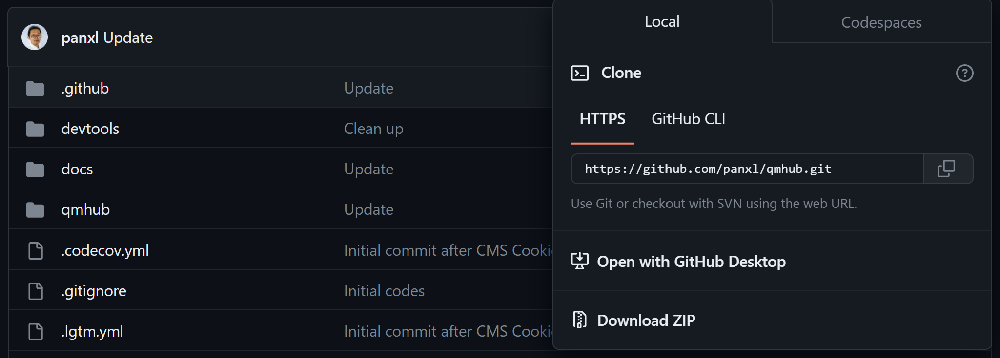

Installation
{kind=link}
install mambaforge or miniforge
install numpy, scipy, and ipython
you should now have seperate directroy with qmhub.ini, qmmm.inp, and qmmm.out
you run qmhub in this directory .. code-block:
qmhub -t qmmm.inp qmhub.ini
{kind=link}
Outside of this directory, run the following commands: .. code-block:
git clone https://github.com/andysim/helpme.git
cd helpme
module load CMake/3.9.6
mkdir build
cp cmake.sh build
cd build
bash cmake.sh
make helpmelib
cp python/helpmelib.cpython-310-x86_64-linux-gnu.so /[pwd]/mambaforge/lib/[python.version]/site-packages/qmhub
N.B. you have your own cmake.sh for your server enviorment, for example:
if you use an intel compilers, you will need to compile each time at the start of the session; run:
- ..code-block::
module load intel/2020a export LD_PRELOAD=$MKLROOT/lib/intel64/libmkl_core.so:$MKLROOT/lib/intel64/libmkl_sequential.so
If errors are encountered, see: https://stackoverflow.com/questions/61341878/intel-mkl-fatal-error-when-running-kaldi-gst-live-demo
Command Line Usage
Generate the .inp input file manually
use mdanaylsis, a script with protein databank file, or anything that can generate data in right format
https://docs.mdanalysis.org/stable/index.html
qmmm.inp contains:
first 3 columns xyz cordiantes
4th column is charge for MM
5th column is atomic number for QM
run: .. code-block:
qmhub -t qmmm.inp qmhub.ini
View the output in qmmm.out as a coordinate list
N.B. in qmmm.ini, nrespa is the number of MM cycles between QM cycles
Python Module
qmhub can be used as a python moduele that can do all and more of qmhub commandline functionality:
take arrays from .nc and .psf formate and copy them directly into QMhub with protein data bank files, mdanaylsis, anything
force matching
Maxmimum likelihood potentional training
energy weighting
by using python to extract the desired array from qmhub and do maniputations or seperate from simulations